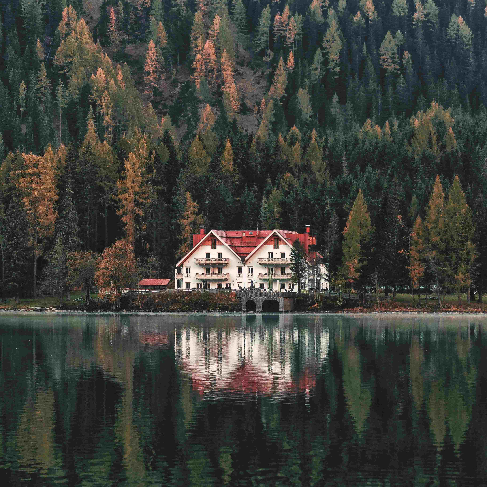

CABANA MAGIA
A original, Cabana Magia é cheia de surpresas em todas as partes, dentro e fora. É a cabana perfeita para um passeio em família, onde as crianças irão se entreter do começo ao final. É o lar oficial do nosso mascote, ele adora crianças e com certeza irá brincar muito com seus filhos. Próximo dela há cachoeiras, uma floresta encantadora e um jardim magnifico. É o local onde a imaginação nasce. Sendo segura para crianças e muito confortável para os adultos.
A cabana está disponível para alugar por até 1 mês inteiro. Conta com 2 banheiros individuais sem chuveiro, 3 suites, cozinha, sala, área infantil e uma sala de jantar.
-
Familiar
-
Divertida
-
Floresta
-
Lago
-
Cachoeira
-
Jardim
Preço/dia: R$650,00

Cabana Perfeição
Nossa segunda cabana é a cabana perfeição, para os pombinhos apaixonados. Cabana romântica e encantadora. Diferente da Cabana Magia, ela não fica dentro de uma floresta, mas sim perto de parques (pagos e gratuitos), uma padaria que fornece os melhores pães da manhã, diversos restaurantes dos mais caros até os mais baratos, um cinema com poltronas para casais e outros passeios que você pode vir descobrir.
A cabana está disponivel para alugar por até 1 semana inteira. Conta com 1 suite e 1 quarto, cozinha, sala de estar e uma sala de jantar extremamente romântica.
-
Româmtica
-
Próx/Cidade
-
Parque
-
Cinema
-
Restaurantes
-
Amor
Preço/dia: R$350,00

cabanas curtição
As cabanas curtição são as dos amigos, feitas para festas e um grande número de pessoas, tem o maior número de quartos e uma sala enorme para a maior aproveitamento geral, o lago na frente é seguro e quente durante o verão. São duas cabanas que podem ser alugas juntas ou não.
A Cabana está disponível por até 2 semanas. Tem lago, uma sala de estar enorme, 8 quartos, cozinha, 4 banheiros e uma sala de jantar com mesa o suficiente para 16 pessoas. Caso queira mais gente, é possível alugar a cabana do loga junto, duplicando o espaço.
-
Maior Cabana
-
Maior número de quartos
-
Festa
-
Lago
-
Na floresta
Preço/dia: R$5.000,00
